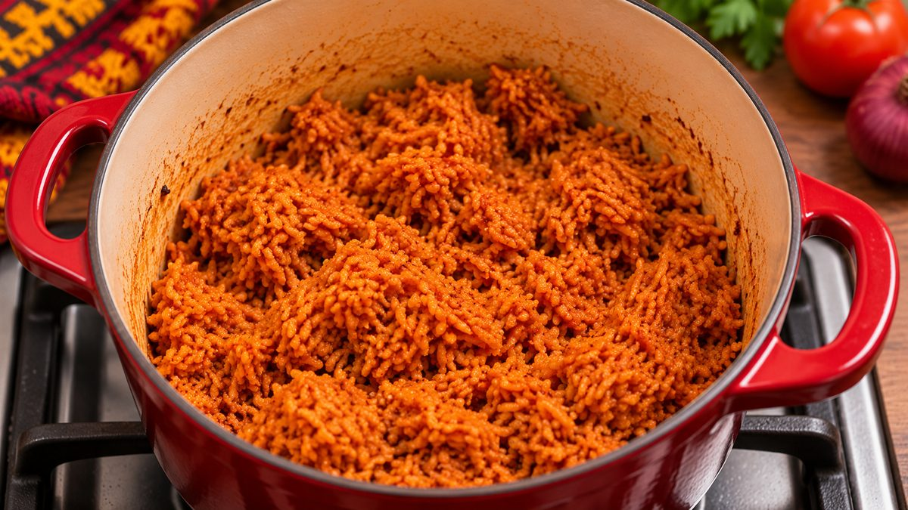
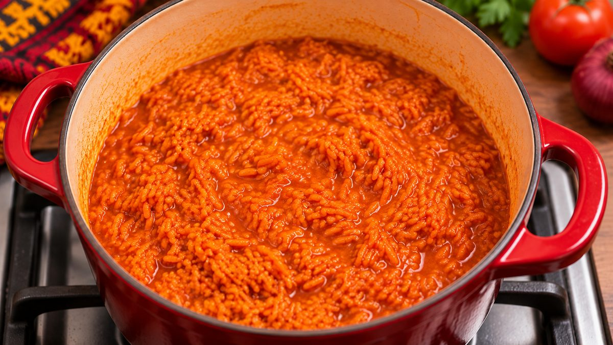
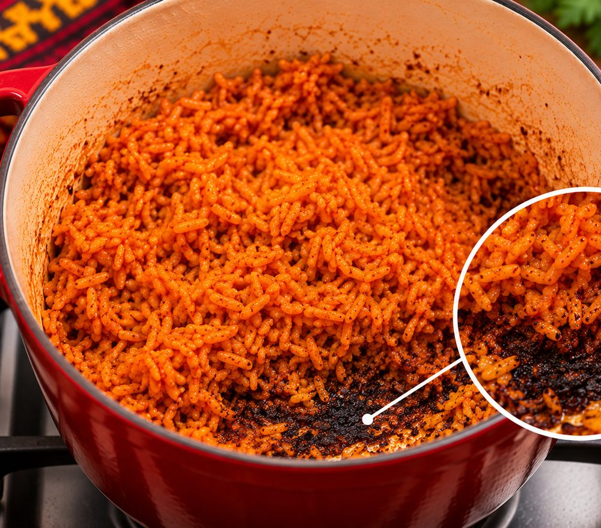

Orientation
Cooking doesn’t always go to plan. A good cook doesn’t follow instructions mechanically — they observe what is happening, identify the problem and make a small, appropriate correction.
Why it matters: Practising these decisions now means you can respond calmly when they happen in your own kitchen.
Given three cooking scenarios involving the selected Jollof rice preparation, the learner will select the appropriate corrective action for conditions involving insufficient moisture, excess moisture, undercooking, or burning in at least two of the three scenarios.
How you’ll show it: the Troubleshooting Readiness Check at the bottom of this page. Target: at least 2 of 3 correct.
Five common problems
The rice is too dry or still undercooked
What you may see
Grains stay hard; the mixture looks dry.
What may have happened
Not enough liquid, or it evaporated before the grains cooked.
What to do
- Add a small amount of water — not too much at once.
- Cover the pot.
- Let it keep cooking.
- Check the texture again, and taste to see whether the seasoning is still balanced.
The rice contains too much moisture
What you may see
Excessively wet; more liquid than the rice needs; grains losing structure.
What may have happened
Too much water was added, or the rice variety needed less liquid.
What to do
- Place aluminum foil tightly over the top of the pot.
- Put the lid securely over the foil.
- Keep cooking over about medium heat.
- Monitor closely — about five more minutes as a first estimate.
- Check whether the texture and moisture have improved.
The tightly covered pot keeps a controlled, enclosed cooking environment while the rice keeps cooking and absorbing moisture. The foil does not absorb water. Judge by the rice’s actual condition, not by the five minutes alone.
The bottom is starting to burn while the top is undercooked
What you may see
Bottom of the pot too hot; lower rice sticking or burning; upper rice still undercooked.
What may have happened
The heat is too high, so the bottom cooks faster than the rest.
What to do
- Reduce or manage the heat.
- Don’t increase the heat to hurry the top.
- Keep the pot covered.
- Continue cooking in a controlled way and watch whether it cooks more evenly.
The finished rice tastes sour
What you may see
A noticeable sour tomato taste; under-developed tomato flavour.
What may have happened
The tomato mixture wasn’t cooked enough before the broth and rice went in.
What to do
Prevention is the fix: cook and taste the tomato base before moving to the rice stage (page 3.3). Extra seasoning later may not correct it.
The rice is too salty or too spicy
What you may see
Salt or pepper heat overpowers the other flavours.
What may have happened
Seasoning was added without first tasting the broth and tomato mixture.
What to do
Always taste after adding the broth and before seasoning further. Adjust a little at a time and taste again (page 3.4).
The troubleshooting principle
Don’t adjust blindly. First identify the problem, think about what caused it, then make a small, appropriate correction.
The key decisions are: Is the tomato base cooked enough? Does it need more seasoning? Is there enough liquid? Is the heat right? Is the rice fully cooked? Are the texture and moisture acceptable?
Troubleshooting Readiness Check
Directions: Read each scenario and look closely at the photo. Select the most appropriate corrective action, then choose Check my answer to get feedback. You can change your answer and check again.
Target: at least 2 of 3 scenarios correct shows you are ready for the final performance.



0 of 3 scenarios answered. Answer all three to see your readiness result.
Key takeaways
- Too dry or undercooked: add a little water, cover, keep cooking, check again.
- Too wet: foil tightly over the pot, lid on, medium heat, check after about five minutes.
- Burning bottom with an undercooked top: lower or manage the heat, keep it covered, monitor.